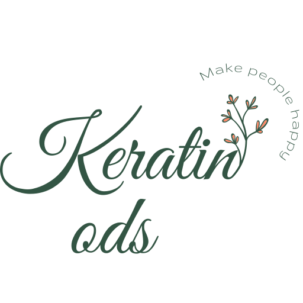
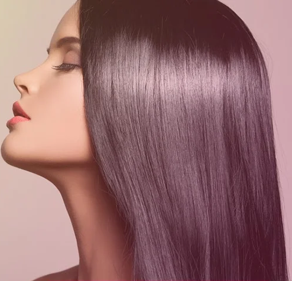
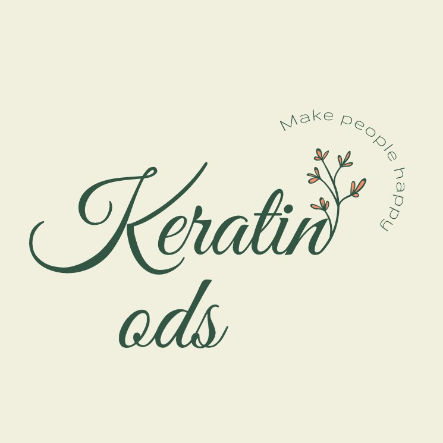

О нас
Теория
Практика
Контакты
instagram
@keratin_ods
О нас
Теория
Практика
Контакты
Восстан
o
влене
Свобо
d
а
Бле
s
к
☎ Оставить заявку ⮕


~ O нас ~
В данном разделе
Рассказывается краткая история о нас
И предлагаемых услугах
В основе которых лежат современные технологии
🧪 О методиках ⮕
~ Теория ~
Существует 3 основных уровня воздействия на волосы в зависимости от первоначального состояния волос и желаемого эффекта:
~ холодное восстановление
;
~ кератин
;
~ ботокс
;
~ нанопластика
.
Наглядые фото показаны в следующем разделе.
💼 Результаты ⮕
Холодное восстановление - самая лёгкая и щадящая процедура.
Кератиновое выпрямление - долговременное укрепление и защита волос с применением наиболее сбалансированных материалов
Ботокс для волос - процедура наибольшего воздействия на структуру волоса
Нанопластика - чистая химия!